Welcome. Let’s set up your counter, one step at a time.स्वागत है। चलिए, एक-एक कदम करके आपका काउंटर तैयार करते हैं। Grokcos
Provide your business details first. They are used on every bill, again and again, so each client gets a neat, legible, itemized bill with the date and a discount % on each line. That is the core reason this application came into existence.
Then follow the steps in order. Together they make one full cycle: shop, stock, client, bill, WhatsApp, payment, returns, reports and backup. Each step says why the feature is there and how it helps you, with a screenshot.
Words in boxes are buttons, written exactly as in the app. Words in green are tabs in the bottom bar. All names and numbers in the screenshots are made up.
सबसे पहले अपनी दुकान की जानकारी डालिए। यह हर बिल पर बार-बार इस्तेमाल होती है, ताकि हर ग्राहक को साफ़, पढ़ने लायक, हर दवा की अलग लाइन वाला बिल मिले, जिसमें तारीख़ और हर लाइन पर छूट % हो। यही इस ऐप के बनने की असली वजह है।
फिर कदम क्रम से पूरे कीजिए। मिलकर ये एक पूरा चक्र बनाते हैं: दुकान, स्टॉक, ग्राहक, बिल, WhatsApp, भुगतान, वापसी, रिपोर्ट और बैकअप। हर कदम में बताया है कि यह सुविधा क्यों है और आपकी कैसे मदद करती है, साथ में स्क्रीनशॉट।
डिब्बे वाले शब्द बटन हैं, ठीक वैसे जैसे ऐप में लिखे हैं। हरे शब्द नीचे की पट्टी के टैब हैं। स्क्रीनशॉट के सारे नाम और नंबर काल्पनिक हैं।
1 Create your businessअपनी दुकान बनाइए
Open the 🏪 Shop tab. Fill in Shop name * (the only required field), then Pharmacist name, Shop phone, Counter person’s name, Address and the Letterhead line (for example your drug licence number). You can also add a Logo and the low-stock default.
- Type your details exactly as you want clients to read them.
- Tap Save shop details.
🏪 Shop टैब खोलिए। Shop name * (दुकान का नाम, यही एक ज़रूरी खाना है) भरिए, फिर फ़ार्मासिस्ट का नाम, दुकान का फ़ोन, काउंटर पर बैठने वाले का नाम, पता और लेटरहेड लाइन (जैसे ड्रग लाइसेंस नंबर)। चाहें तो लोगो और कम-स्टॉक की सीमा भी डाल सकते हैं।
- जानकारी ठीक वैसी लिखिए जैसी आप ग्राहक को बिल पर दिखाना चाहते हैं।
- Save shop details दबाइए।
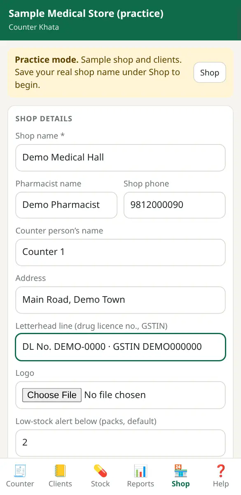
2 Practice mode vs real modeप्रैक्टिस मोड और असली मोड
When you open the app the first time, it is in Practice mode. A yellow banner says so, and a sample shop with sample clients (Suresh Kumar, Harpreet Kaur and others) is loaded so you can try every button without fear.
The moment you save a real Shop name, the app switches to real mode and asks whether to Clear practice books. Choose it to start clean, or Not now to keep practising. Later you can still remove them with Clear them on the banner or Clear practice data in Shop.
ऐप पहली बार खोलने पर Practice mode (अभ्यास मोड) में होता है। ऊपर पीली पट्टी यही बताती है, और एक नमूना दुकान व नमूना ग्राहक (सुरेश कुमार, हरप्रीत कौर आदि) पहले से भरे होते हैं ताकि आप बेझिझक हर बटन आज़मा सकें।
जैसे ही आप असली Shop name सेव करते हैं, ऐप असली मोड में आ जाता है और पूछता है कि Clear practice books करें या नहीं। साफ़ शुरुआत के लिए इसे चुनिए, या अभ्यास जारी रखने के लिए Not now। बाद में भी पट्टी पर Clear them या Shop में Clear practice data से इन्हें हटा सकते हैं।
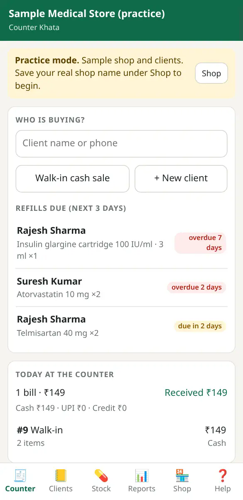
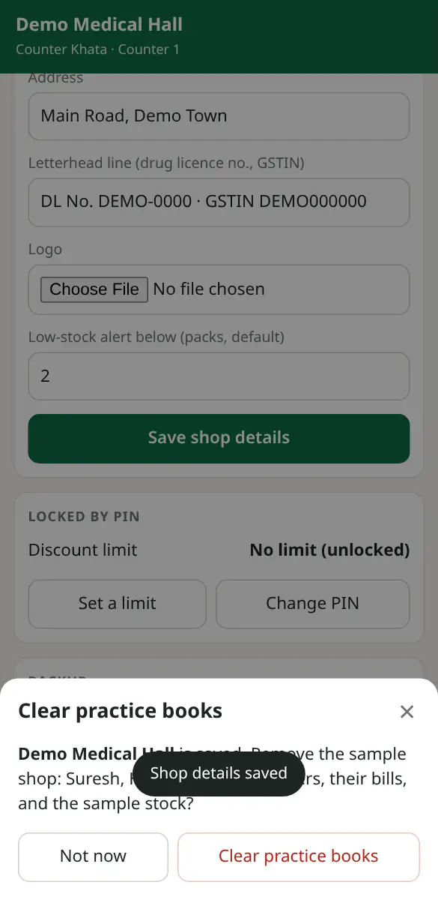
3 PIN and the discount limitPIN और छूट की सीमा
Under 🏪 Shop, the Locked by PIN card has Change PIN and Set a limit. Fixing a saved bill (✎ Change amount, Edit items, Return packs, Void) asks for the Pharmacist PIN. Once typed it stays unlocked for 5 minutes.
The discount limit stops anyone at the counter from giving more than your chosen % on a line.
🏪 Shop में Locked by PIN कार्ड पर Change PIN और Set a limit हैं। सेव हो चुके बिल को बदलने (✎ Change amount, Edit items, Return packs, Void) के लिए फ़ार्मासिस्ट PIN माँगा जाता है। एक बार डालने पर यह 5 मिनट तक खुला रहता है।
छूट की सीमा से काउंटर पर कोई भी किसी लाइन पर आपकी तय % से ज़्यादा छूट नहीं दे पाता।
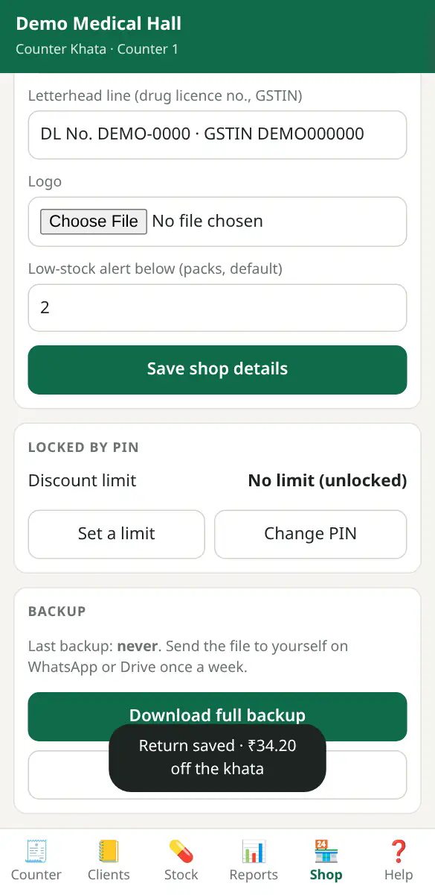
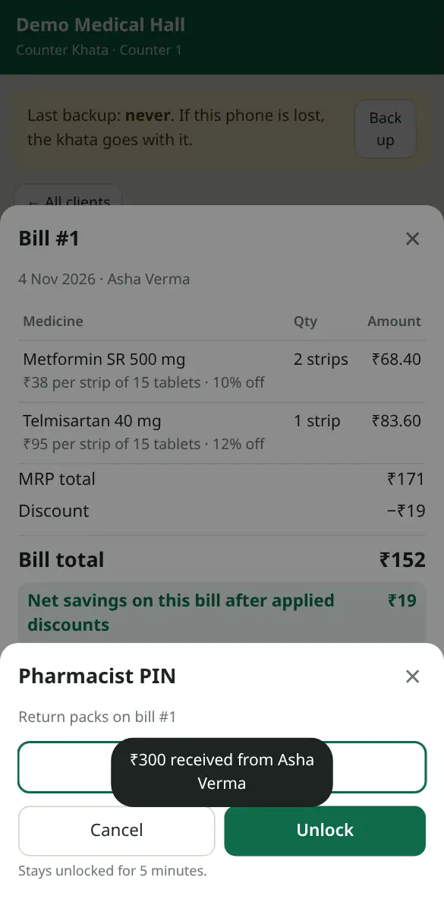
4 Add your medicines (stock)अपनी दवाइयाँ (स्टॉक) डालिए
Open 💊 Stock and tap + Add medicine. Fill the name, strength, salt, type, units per pack, MRP per pack, the usual discount %, packs on the shelf and expiry. Tap any value in the list later to edit it in place; ⋯ has more options.
Have a long list? Use Stock template and Import stock under 🏪 Shop → Import from Excel.
💊 Stock खोलिए और + Add medicine दबाइए। नाम, ताक़त (strength), सॉल्ट, प्रकार, एक पैक में कितनी यूनिट, पैक का MRP, आम छूट %, शेल्फ़ पर कितने पैक और एक्सपायरी भरिए। बाद में सूची में किसी भी चीज़ पर टैप करके वहीं बदल सकते हैं; ⋯ में और विकल्प हैं।
लंबी सूची है? 🏪 Shop → Import from Excel में Stock template और Import stock का इस्तेमाल कीजिए।
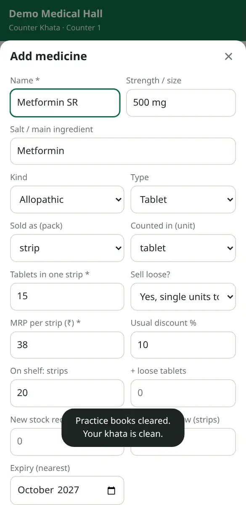
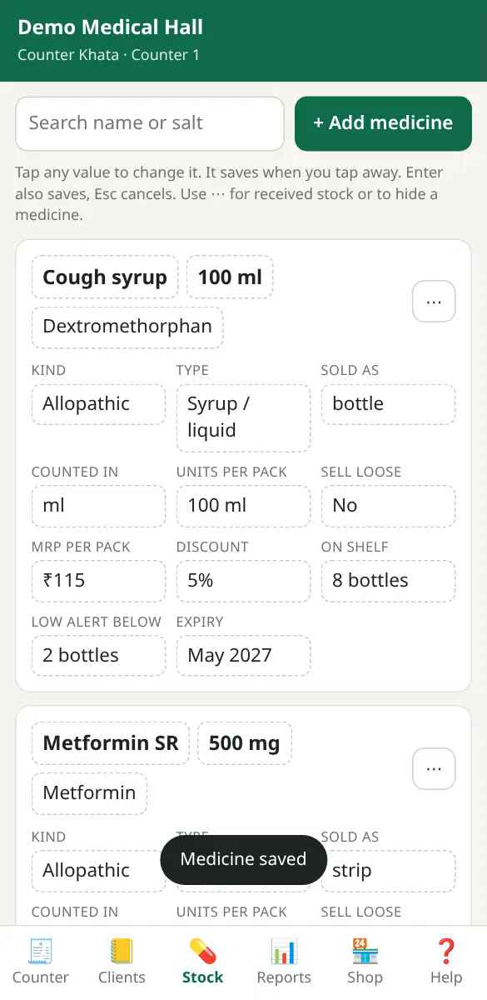
5 Add your first clientपहला ग्राहक जोड़िए
Open 📒 Clients and tap + New client. Enter Name *, Phone (10 digits), Address, and an Opening balance (₹) with its As on date if they already owe you from an old register. Tap Save client.
📒 Clients खोलिए और + New client दबाइए। नाम *, फ़ोन (10 अंक), पता, और अगर पुराने रजिस्टर से उधार बाक़ी है तो Opening balance (₹) और उसकी As on date भरिए। Save client दबाइए।
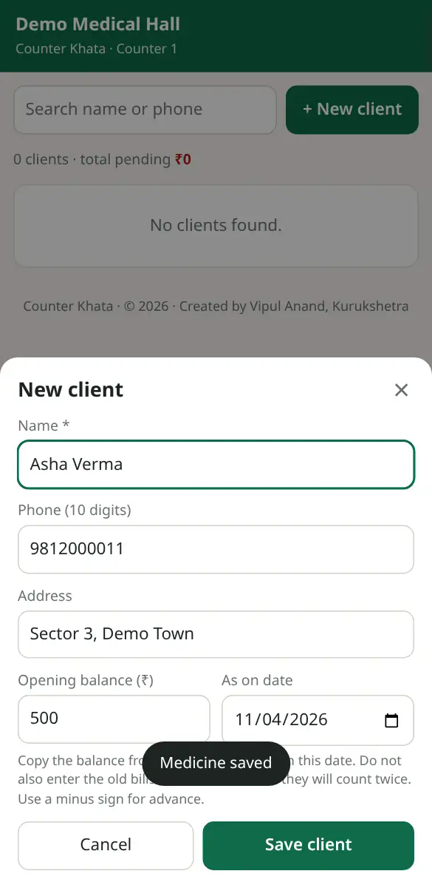
6 Make a bill at the counterकाउंटर पर बिल बनाइए
- Open 🧾 Counter. Under Who is buying? search the client, or choose Walk-in cash sale. Change client swaps them.
- In Add medicine, type a few letters and tap the medicine. Use − + for packs; tick Loose to sell single tablets.
- Check Discount % on each line.
- Choose Paid by Cash, UPI or Credit, type Received now, and check Bill date.
- Read Khata after this bill before saving.
Repeat last bill and Refills due (next 3 days) help with regular patients.
- 🧾 Counter खोलिए। Who is buying? में ग्राहक खोजिए, या Walk-in cash sale चुनिए। Change client से ग्राहक बदलते हैं।
- Add medicine में कुछ अक्षर लिखकर दवा पर टैप कीजिए। पैक के लिए − +; अलग-अलग गोली बेचने के लिए Loose चुनिए।
- हर लाइन पर Discount % जाँचिए।
- Paid by में Cash, UPI या Credit चुनिए, Received now (अभी मिली रक़म) लिखिए और Bill date देख लीजिए।
- सेव करने से पहले Khata after this bill (बिल के बाद खाता) पढ़ लीजिए।
नियमित मरीज़ों के लिए Repeat last bill और Refills due (next 3 days) काम आते हैं।
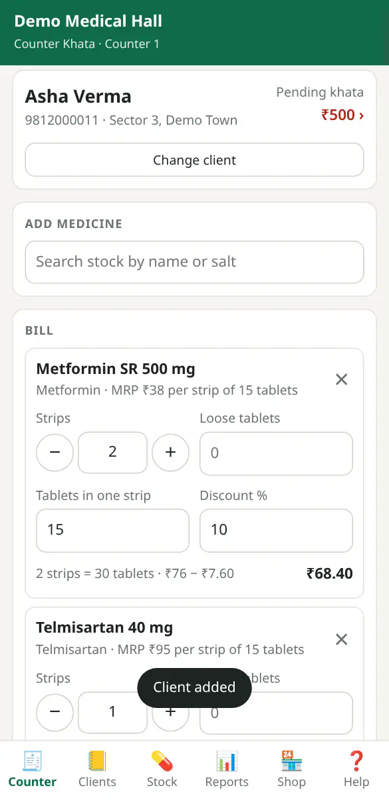
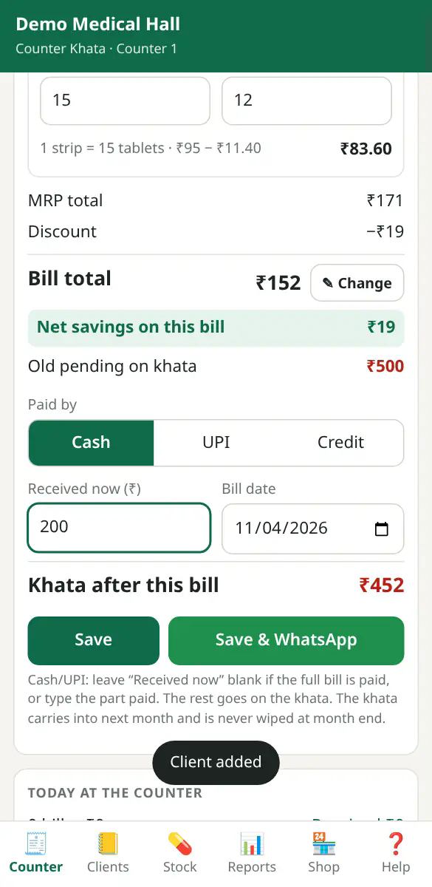
8 Khata and paymentsखाता और भुगतान
In 📒 Clients open a client to see their khata: every bill and payment with the running balance. When they pay, tap Amount received, type the amount, choose Cash or UPI and tap Save payment. Month bill sends a month statement (Send statement PDF, with an Itemized option). + Add prescription keeps their regular medicines; Edit client fixes their details.
📒 Clients में ग्राहक खोलिए, उसका खाता दिखेगा: हर बिल और भुगतान, साथ में चलता बाक़ी। पैसे मिलने पर Amount received दबाइए, रक़म लिखिए, Cash या UPI चुनिए और Save payment दबाइए। Month bill से महीने का स्टेटमेंट भेजिए (Send statement PDF, Itemized विकल्प के साथ)। + Add prescription में नियमित दवाइयाँ रखिए; Edit client से जानकारी सुधारिए।
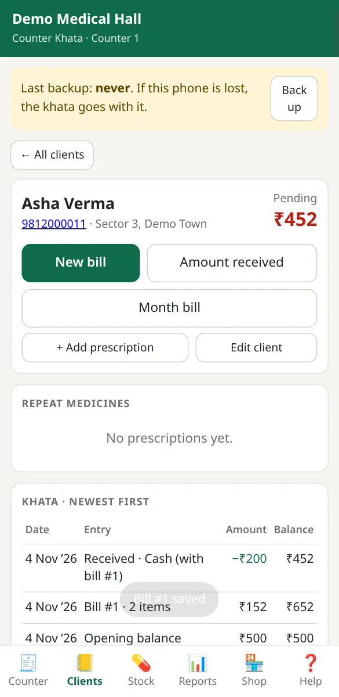
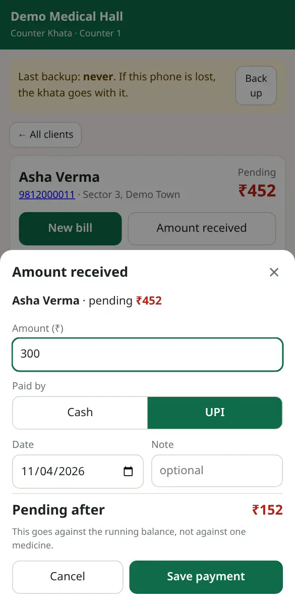
9 Fix a bill and take returnsबिल सुधारिए और वापसी लीजिए
Tap a bill in the khata or in Today at the counter. The bill opens with Send itemized PDF, ✎ Change amount, Edit items, Return packs and Void (PIN needed). For a return, enter how many strips or loose units came back and save; the refund comes off the client’s khata.
खाते में या Today at the counter में किसी बिल पर टैप कीजिए। बिल खुलेगा, जिसमें Send itemized PDF, ✎ Change amount, Edit items, Return packs और Void हैं (PIN चाहिए)। वापसी के लिए बताइए कितनी स्ट्रिप या खुली गोलियाँ लौटीं और सेव कीजिए; पैसा ग्राहक के खाते से घट जाता है।
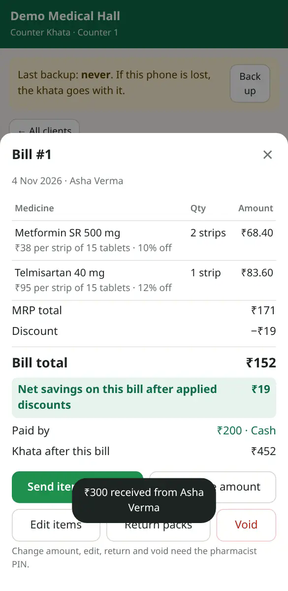
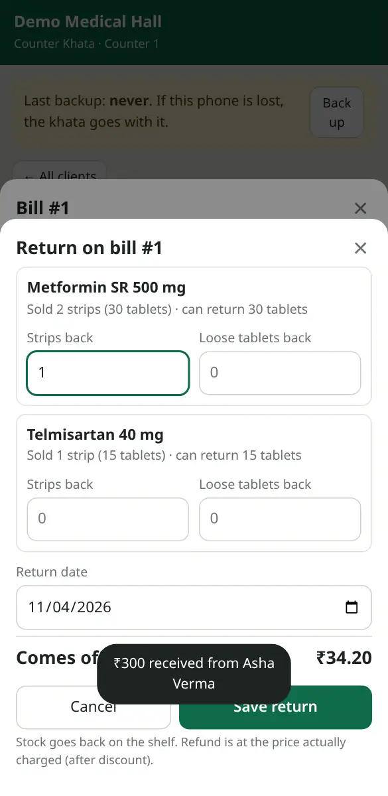
10 Reportsरिपोर्ट
📊 Reports shows a month at a time: billed (after returns), collected, still due, a six-month chart and top medicines. Pick the month at the top. Month statements (all clients) sends every client’s statement, and This month’s bills lists them all.
📊 Reports एक बार में एक महीना दिखाता है: कितना बिल हुआ (वापसी के बाद), कितना वसूला, कितना बाक़ी, छह महीने का चार्ट और सबसे ज़्यादा बिकी दवाइयाँ। ऊपर महीना चुनिए। Month statements (all clients) से सब ग्राहकों के स्टेटमेंट, और This month’s bills में महीने के सारे बिल।
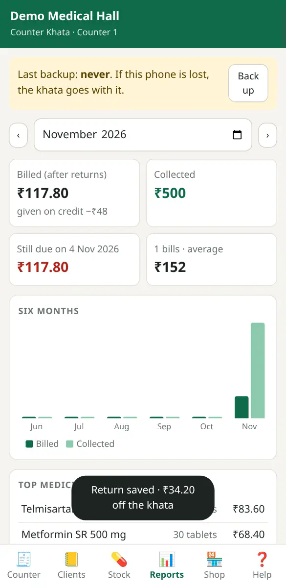
11 Backup, export and importबैकअप, एक्सपोर्ट और इम्पोर्ट
In 🏪 Shop: Download full backup saves one file with everything; Restore a backup brings it back on this or a new phone. Excel (CSV) exports: Khata entries, All bills with items, Clients + balance, Stock. Imports: Import clients and Import stock, with templates.
🏪 Shop में: Download full backup से सब कुछ एक फ़ाइल में सेव होता है; Restore a backup से उसी या नए फ़ोन पर वापस आता है। Excel (CSV) एक्सपोर्ट: Khata entries, All bills with items, Clients + balance, Stock। इम्पोर्ट: Import clients और Import stock, टेम्पलेट के साथ।
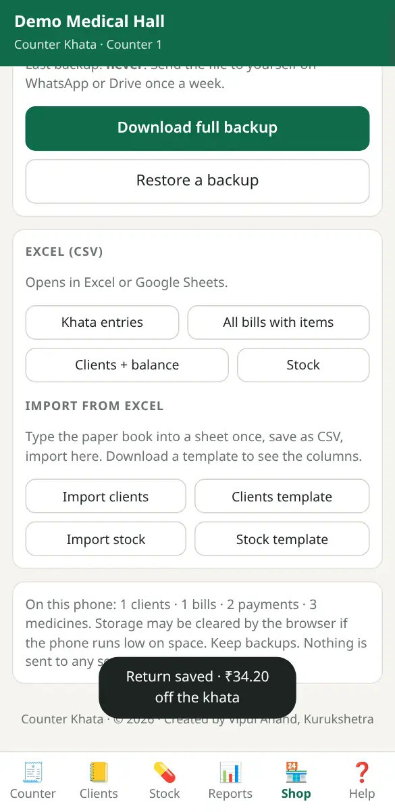
12 The bottom bar: what lives whereनीचे की पट्टी: क्या कहाँ है
| Tabटैब | What lives hereयहाँ क्या है |
|---|---|
| 🧾 Counter | Make a bill: pick client, add medicines, discount, payment, save and share. Today at the counter.बिल बनाना: ग्राहक, दवाइयाँ, छूट, भुगतान, सेव और भेजना। आज का काउंटर। |
| 📒 Clients | All clients and each khata: bills, payments, month bill, prescriptions.सब ग्राहक और हर खाता: बिल, भुगतान, महीने का बिल, पर्चे। |
| 💊 Stock | Your medicines: price, discount, shelf count, expiry, low stock.आपकी दवाइयाँ: क़ीमत, छूट, शेल्फ़ गिनती, एक्सपायरी, कम स्टॉक। |
| 📊 Reports | Month totals, collections, outstanding, statements.महीने का कुल, वसूली, बाक़ी, स्टेटमेंट। |
| 🏪 Shop | Shop details, PIN and discount limit, backup, Excel import and export, clear practice data.दुकान की जानकारी, PIN और छूट सीमा, बैकअप, Excel इम्पोर्ट-एक्सपोर्ट, अभ्यास डेटा हटाना। |
| ❓ Help | Opens the help and FAQ page.मदद और FAQ पेज खोलता है। |
You have done one full cycleआपने एक पूरा चक्र कर लिया
That is the whole day at the counter. Stuck later? The Help page has answers for common problems.काउंटर का पूरा दिन यही है। आगे कहीं अटकें तो मदद पेज पर आम परेशानियों के जवाब हैं।